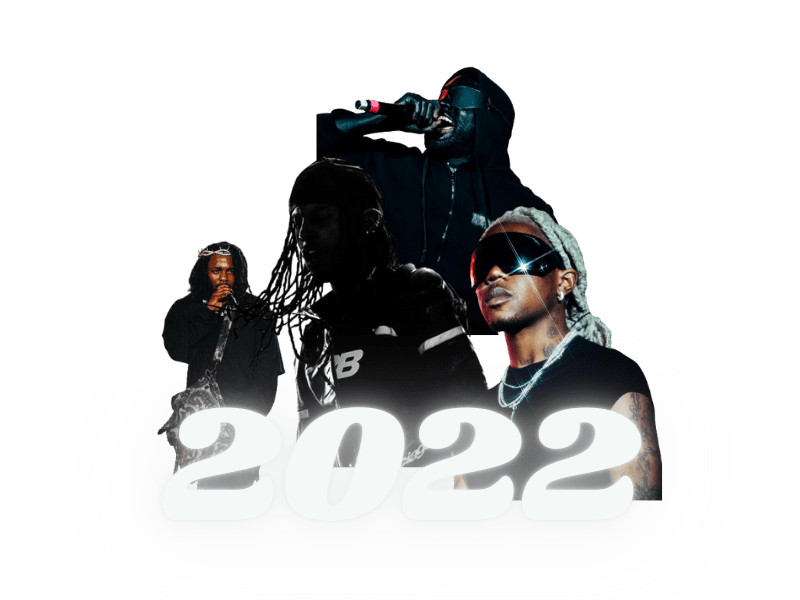

~~~~~~~~~~~~ The History of Rolling Loud ~~~~~~~~~~~~
Rolling Loud, founded by Tariq Cherif and Matt Zingler after attending the Ultra Music Festival in Miami, sets out to create a festival exclusively dedicated to hip-hop music. The first Rolling Loud festival, held at Soho Studios in Miami, occurs during summer vacation and features performances by artists like Travis Scott, A$AP Rocky, and Lil Uzi Vert. The festival quickly gains a reputation for being one of the most exciting and energetic music festivals in the country.
In its second year, Rolling Loud returns to Miami, expanding to three days and featuring performances by over 50 artists. As a summertime event, it attracts larger crowds and garners more attention from the music industry.
The festival expands to the West Coast, hosting its first event in the Bay Area of California, and returns to Miami for its third year. Performances by artists like Future, Kendrick Lamar, and Lil Wayne contribute to its growth, as do up-and-coming artists like Lil Pump and XXXTentacion.
Rolling Loud further extends its reach, adding new festivals in Los Angeles and Sydney, Australia. It returns to Miami for its fourth year, with performances by artists like J. Cole, Migos, and Cardi B. The organizers also launch Rolling Loud Records, a record label supporting emerging hip-hop and rap artists.
Setting a new attendance record with its Miami festival, Rolling Loud attracts over 120,000 fans during the summer event. Expanding to New York City, the festival features performances by artists like Travis Scott, A$AP Rocky, and Meek Mill, continuing to boost new artists like Megan Thee Stallion and DaBaby.
Due to the COVID-19 pandemic, Rolling Loud cancels its in-person summer festivals and instead hosts a virtual festival called Loud Stream. Despite the challenges posed by the pandemic, the brand continues to expand, launching Rolling Loud merchandise and partnering with other companies in the music and entertainment industry.
Rolling Loud returns to hosting in-person festivals in Miami, New York City, and Los Angeles, featuring performances by artists like Travis Scott, Post Malone, and A$AP Rocky. It attracts large crowds despite ongoing concerns about the pandemic and remains a major player in the music industry, helping shape the future of hip-hop and rap music.

Rolling Loud 2022 returns with an exciting lineup of hip-hop and rap artists, promising a bigger and better experience than ever before. With new stages and collaborations, and a commitment to launching the careers of up-and-coming artists, this summer vacation event is sure to deliver an unforgettable experience for fans. Get ready for the excitement and surprises of Rolling Loud 2022!